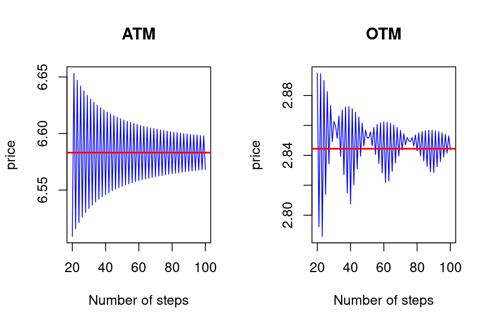
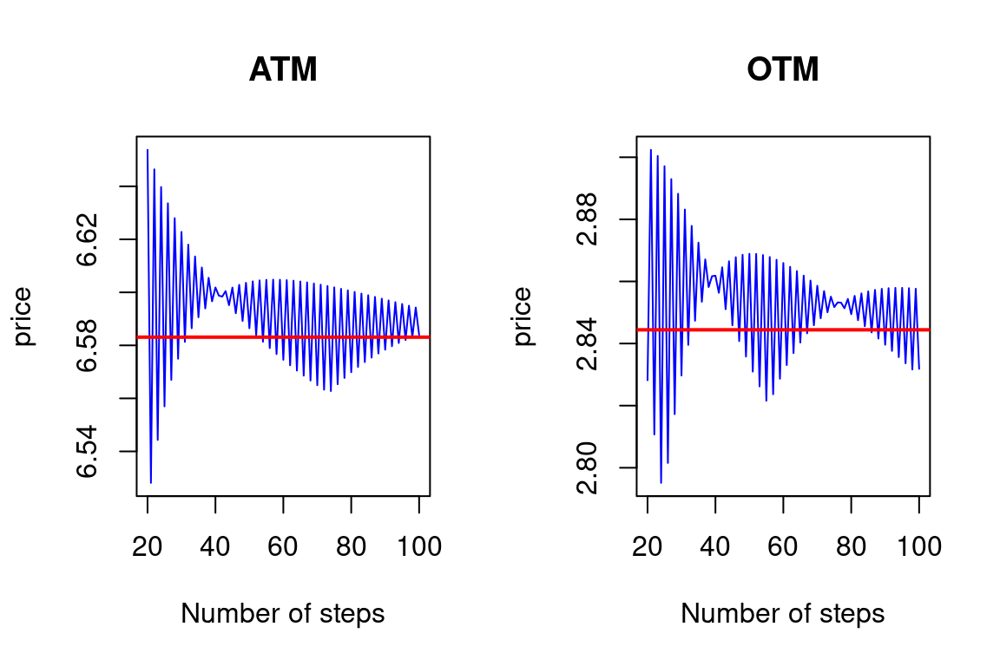
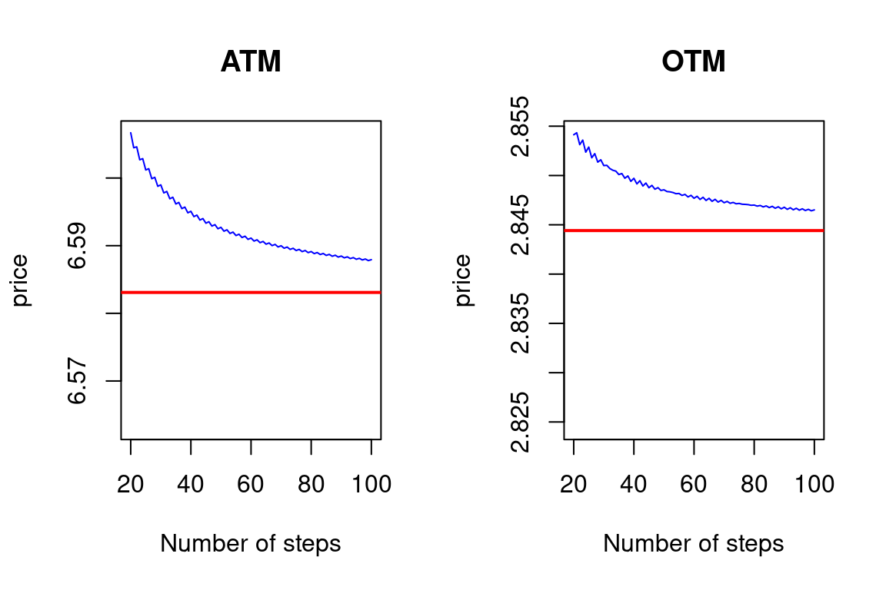
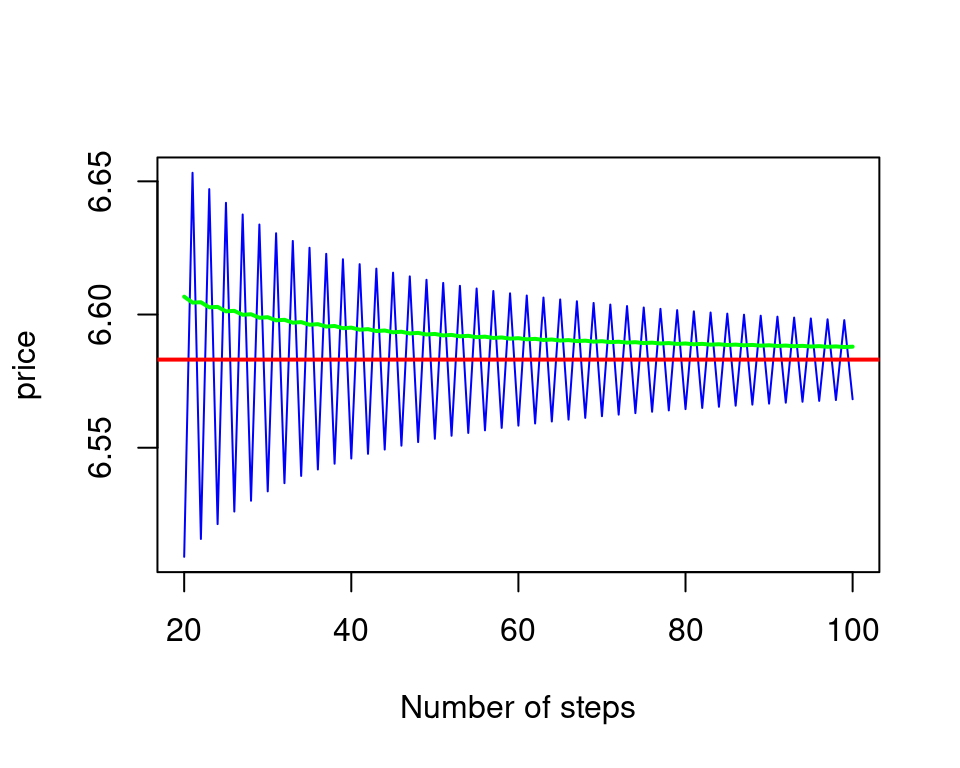

We would like to verify the convergence of the Cox-Ross model to the Black-Scholes price as the number of steps \(N\) increases. This can be investigated with the following script:
Strike <- 100
Spot <- 100
T1 <- 1/4
r <- 0.05
b <- 0.05
sigma <- 0.3
NN <- seq(20, 100, 1)
nb <- length(NN)
res <- matrix(nrow = nb, ncol = 2)
bs <- rep(0, 2)
# The Black-Scholes price
bs[1] <- GBSOption(TypeFlag = "c", S = Spot, X = Strike,
Time = T1, r = r, b = b, sigma = sigma)@price
bs[2] <- GBSOption(TypeFlag = "c", S = Spot, X = Strike +
10, Time = T1, r = r, b = b, sigma = sigma)@price
# Binomial price, function of number of
# steps
res[, 1] <- sapply(NN, function(n) CRRBinomialTreeOption(TypeFlag = "ce",
S = Spot, X = Strike, Time = T1, r = r, b = b,
sigma = sigma, n)@price)
res[, 2] <- sapply(NN, function(n) CRRBinomialTreeOption(TypeFlag = "ce",
S = Spot, X = Strike + 10, Time = T1, r = r,
b = b, sigma = sigma, n)@price)A plot of the prices as a function of the number of steps (Figure \[fig:bin-conv\]) shows an oscillating pattern:
par(mfrow = c(1, 2))
plot(NN, res[, 1], type = "l", main = "ATM", xlab = "Number of steps",
ylab = "price", col = "blue", ylim = c(min(res[,
1]), max(res[, 1])))
abline(h = bs[1], lwd = 2, col = "red")
plot(NN, res[, 2], type = "l", main = "OTM", xlab = "Number of steps",
ylab = "price", col = "blue", ylim = c(min(res[,
2]), max(res[, 2])))
abline(h = bs[2], lwd = 2, col = "red")
par(mfrow = c(1, 1))
Other binomial algorithms, such as Tian’s, exhibit a similar pattern, as evidenced in Figure \[fig:bin-conv-2\]. The horizontal line marks the Black-Scholes price.

This sawtooth pattern is due to the position of the strike relative to the sequence of nodes at expiry; we describe below some computational strategies for smoothing these oscillations and speeding up the convergence of binomial trees. See Joshi (2007Joshi, Mark S. 2007. “The Convergence of Binomial Trees for Pricing the American Put.” ssrn.com/abstract=1030143.) for an extensive survey of binomial models with improved convergence properties.
Since the oscillations are caused by the variations in the relative position of the strike with respect to nodes at expiry, a natural strategy, introduced by Leisen and Reimer (1996Leisen, D P J, and M Reimer. 1996. “Binomial Models for Option Valuation - Examining and Improving Convergence.” Applied Mathematical Finance 3: 319–46.), is to construct the tree such that the strike coincides with a node. This is achieved by setting \[\mu = \frac{1}{T} \log \left(\frac{K}{S_0} \right)\]
The resulting tree is centered on \(K\) in log space. The pricing method is implemented as follows:
CRRWithDrift <- function(TypeFlag = c("ce", "pe",
"ca", "pa"), S, X, Time, r, mu, sigma, n) {
TypeFlag = TypeFlag[1]
z = NA
if (TypeFlag == "ce" || TypeFlag == "ca")
z = +1
if (TypeFlag == "pe" || TypeFlag == "pa")
z = -1
if (is.na(z))
stop("TypeFlag misspecified: ce|ca|pe|pa")
dt = Time/n
u = exp(mu * dt + sigma * sqrt(dt))
d = exp(mu * dt - sigma * sqrt(dt))
p = (exp(r * dt) - d)/(u - d)
Df = exp(-r * dt)
# underlying asset at step N-1
ST <- S * (d^(n - 1)) * cumprod(c(1, rep((u/d),
n - 1)))
# at step (n-1), value an European
# option of maturity dt
BSTypeFlag <- substr(TypeFlag, 1, 1)
OptionValue <- GBSOption(BSTypeFlag, ST, X,
dt, r, b, sigma)@price
if (TypeFlag == "ce" || TypeFlag == "pe") {
for (j in seq(from = n - 2, to = 0, by = -1)) OptionValue <- (p *
OptionValue[2:(j + 2)] + (1 - p) *
OptionValue[1:(j + 1)]) * Df
}
if (TypeFlag == "ca" || TypeFlag == "pa") {
for (j in seq(from = n - 2, to = 0, by = -1)) {
ContValue <- (p * OptionValue[2:(j +
2)] + (1 - p) * OptionValue[1:(j +
1)]) * Df
ST <- S * (d^j) * cumprod(c(1, rep((u/d),
j)))
OptionValue <- sapply(1:(j + 1), function(i) max(ST[i] -
X, ContValue[i]))
}
}
OptionValue[1]
}Convergence of the model as \(N\) increases is significantly improved, as evidenced by the graphs in Figure \[fig:CRRWithDrift\].

In the context of an American option, note that if the option has not been exercised at step \(N-1\), the option is now European, and can be priced at these nodes with the Black-Scholes model, rather than with the backward recursion from step \(N\) (the expiry date). This simple modification smooths the option value at step \(N-1\) and cancels the oscillations, as illustrated in figure \[fig:bin-conv-crr-bs\], but at the price of a substantial increase in computation time.
CRRWithBS <- function(TypeFlag = c("ce", "pe",
"ca", "pa"), S, X, Time, r, b, sigma, n) {
TypeFlag = TypeFlag[1]
z = NA
if (TypeFlag == "ce" || TypeFlag == "ca")
z = +1
if (TypeFlag == "pe" || TypeFlag == "pa")
z = -1
if (is.na(z))
stop("TypeFlag misspecified: ce|ca|pe|pa")
dt = Time/n
u = exp(sigma * sqrt(dt))
d = 1/u
p = (exp(b * dt) - d)/(u - d)
Df = exp(-r * dt)
# underlying asset at step N-1
ST <- S * (d^(n - 1)) * cumprod(c(1, rep((u/d),
n - 1)))
# at step (n-1), value an European
# option of maturity dt
BSTypeFlag <- substr(TypeFlag, 1, 1)
OptionValue <- GBSOption(BSTypeFlag, ST, X,
dt, r, b, sigma)@price
if (TypeFlag == "ce" || TypeFlag == "pe") {
for (j in seq(from = n - 2, to = 0, by = -1)) OptionValue <- (p *
OptionValue[2:(j + 2)] + (1 - p) *
OptionValue[1:(j + 1)]) * Df
}
if (TypeFlag == "ca" || TypeFlag == "pa") {
for (j in seq(from = n - 2, to = 0, by = -1)) {
ContValue <- (p * OptionValue[2:(j +
2)] + (1 - p) * OptionValue[1:(j +
1)]) * Df
ST <- S * (d^j) * cumprod(c(1, rep((u/d),
j)))
OptionValue <- sapply(1:(j + 1), function(i) max(ST[i] -
X, ContValue[i]))
}
}
OptionValue[1]
}